2.
ツクヨミ様再来！「お団子を集めてきてちょうだい！」 ปริศนาดังโงะนรก /me โดนสาป
2.1) เริ่มเควสที่เกาะไทนี่ โดยเราต้องไปคุยกับ
ツクヨミ ก่อน ของที่ต้องเตรียมคือ ดังโงะสีต่างๆจำนวน 5 สีคือ White Red Yellow Green Black Brown (白 赤 黄 緑 黒 茶) ตามลำดับ ซึ่งควรเตรียมไว้สีละอย่างน้อย 5 - 10 อัน โดยหาได้จากชินนามอนในแมพเกาะไทนี่
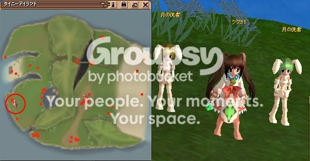
หมายเหตุตารางเวลาในการส่งดังโงะจะไม่เหมือนกัน เทียบเวลาได้ที่ลิ้งด้านล่างนี้
 http://ec.gamedb.info/wiki/Quest/Season/MoonViewing2007/Tsukuyomi.htmlhttp://eco.froztic.in.th/archive/ecofanclub/viewtopic.php?f=24&t=76901
http://ec.gamedb.info/wiki/Quest/Season/MoonViewing2007/Tsukuyomi.htmlhttp://eco.froztic.in.th/archive/ecofanclub/viewtopic.php?f=24&t=769012.2) คุยกับ NPC ตัวเดิมโดยเลือกช้อยตามลำดับนี้
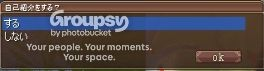
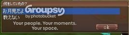
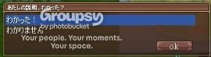
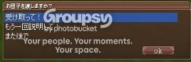
ความหมายของแต่ละตัวเลข
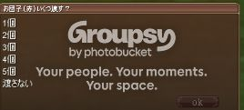
ส่งสี[ ]จำนวน ?
1 ชิ้น
2 ชิ้น
3 ชิ้น
4 ชิ้น
5 ชิ้น
ไม่ส่ง หรือ 0 ชิ้น
หมายเหตุการส่งครั้งที่ 1 และ 2 จะส่งดังโงะสีแค่ 3ชิ้นเท่านั้น ส่วนในครั้งที่ 3 มี 5 ชิ้น
วิธีส่งให้อ้างอิงจากเวลาในขณะนั้น เช่น 15.45pm ให้มองตารางส่วน 15時 โดยเรียงลำดับจาก #1 #2 และ #3 ตามลำดับ
จากเวลาดังกล่าว
#1 คือ ส่งครั้งที่ 1 ส่วนค่า 030 คือ ส่งสีต่างๆ เช่นสีแรก 0 ชิ้น สีสอง 3 ชิ้น สีสาม 0 ชิ้นเป็นต้น
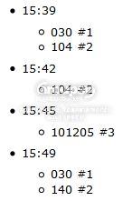
จากรูป เมื่อเทียบเวลาปัจจุบันที่ยกตัวอย่างคือ 15.45pm วิธีการส่งคือ ให้ยึดอันล่าสุดของเวลานั้นๆเป็นหลัก เพราะฉะนั้น การส่งคือ
อิงจาก
#1 030
ครั้งที่สอง อิงเวลา 15.42 #2 104
และ ครั้งที่สามคือ 15.45 #3 101205 เป็นต้น
หมายเหตุถ้าหากเวลาเลื่อนไปแล้วให้อิงเวลาปัจจุบันเป็นหลักแล้วเลื่อนช้อยไปตามเวลา เช่น ขณะนี้เวลา 15.56
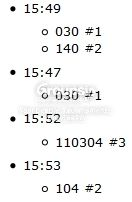
เราต้องอิงตามเวลาจำนวนครั้งล่าสุดและเวลาที่ใกล้เคียงที่สุด ในรูปภาพด้านบน เพราะฉะนั้น จำนวนในการส่งคือ
#1 030
#2 140
#3 110304 เป็นต้น
หรือ วิธีดูตารางแบบที่สอง
ให้ดูตารางจากลิ้งค์
http://ec.gamedb.info/wiki/Quest/Season/MoonViewing2012/TsukuyomiHint.html ตารางด้านล่างสุด
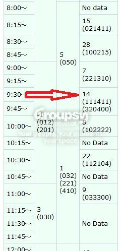
ให้มองเวลาในขณะนั้น แล้วลากเส้นตรงไปทางขวาของตาราง ตกช่องไหนก็ส่งตามจำนวนในวงเล็บของช่องนั้นๆ ถ้าช่องไหนมีสองวงเล็บให้เลือกส่งแบบใดแบบหนึ่งก็ได้
ของรางวัลมีสามชนิด คือ Moon stone สร้อยคาดศีรษะ กรอบรูป
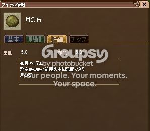
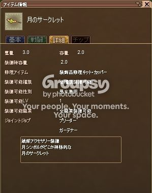
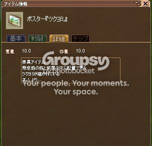
เมื่อได้ของรางวัลครบถ้วนแล้ว ให้คุยกับ NPC อีกครั้ง จะมีช้อยขึ้นมา 3 ข้อ คือ
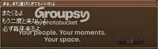
1. จะมาใหม่นะ
2. จะไม่มาอีกเป็นครั้งที่สอง
3. จะมาทุกปี
ให้ตอบ 3 จะได้รับสร้อยประดับอกมา